Об оружии
Чтобы причинить вред зомби, курице или другому игроку, в Minecraft достаточно голых кулаков. Но это самый неэффективный способ боя. Для того, чтобы нанести урон живому существу, достаточно нажать левую кнопку мыши. Кулак отталкивает монстра, как и любой другой удар, что позволяет в некоторых случаях столкнуть монстров с обрыва или в лаву.
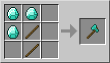
Простые инструменты, включая кирку и лопату, незначительно усиливают силу удара. Топор уже является полноценным оружием и может убить курицу или кролика с одного удара.
Меч - самый удобный вид оружия. Наибольшая сила удара - у алмазного меча. С ним не страшны зомби, а охота становится быстрой и легкой.
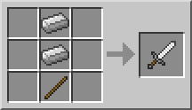
Лук и стрелы хороши для стрельбы на расстоянии, для перестрелки со скелетами или уничтожения монстров из безопасного укрытия. Но это оружие слабее, чем топор, а сила удара зависит от натяжения лука (как во многих играх). Кроме того, стрелы очень быстро расходуются, а для их крафта необходимы куриные перья, которые в больших количествах становятся доступными только после создания куриной фермы. Поэтому на начальных этапах игры лук практически не используется, хотя он часто выпадает из убитых скелетов (вместе с очень небольшим количеством стрел).
Самыми разрушительными видами оружия в Minecraft можно назвать лаву и взрывчатку (ТНТ). Ведро с лавой может моментально убить монстра, но при этом ты можешь загореться сам.
Что касается взрывчатки, то для её срабатывания требуется либо время, либо механизмы на основе красной пыли (редстоуна). Кроме того, для крафта ТНТ нужен порох, который выбивается только из самых опасных мобов Майнкрафта - криперов.
Огонь можно использовать в ловушках (заманите монстра на горючий участок и подожгите его), но это ненадежный способ. Огонь больше всего годится для уничтожения неживых блоков, так как живые существа, включая игроков, могут успешно убегать от пожара.
Вода может быть использована для ловушек. Если на моба или игрока лить воду, и тот не сможет никуда отойти, то через некоторое время моб или игрок задохнётся.
В качестве экзотического оружия в Minecraft можно использовать удочку и поводок. С помощью удочки можно затягивать жертву в огонь или сбрасывать в пропасть. А поводком можно "задушить" моба, если подвесить его и тянуть вверх.
Но самым удобным, практичным и распространенным оружием в Minecraft всё-таки является меч. Именно его и надо крафтить в первую очередь, хотя бы из дерева или камня.
Меч
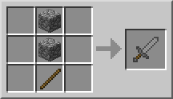
Меч (англ. Sword) — это оружие, которое позволяет убивать мобов и игроков (если в SMP включён PvP) быстрее, чем кулак игрока. Оно также разрушает некоторые блоки быстрее, чем кулак (например листья, шерсть, и песок душ), но каждый разрушенный блок отнимает две единицы прочности у меча, если использовать это оружие подобным образом. Каменный (или лучше) меч разрушает вагонетку за 1 удар без потери очков прочности, в то время как деревянный меч требует двух ударов. В Нижнем мире вы можете найти Зомби-свинолюдей, которые используют золотые мечи, они могут выпасть в качестве редкого дропа.
Начиная с Beta 1.8 и заканчивая в 1.9, игрок, зажав правую кнопку мыши с мечом может поставить блокирование. Также меч можно зачаровывать.
Мечом быстрее других инструментов разрушаются следующие блоки: кровать, кнопка, кактус, торт, листва, паутина (разрушается ножницами с такой же скоростью), стекло, стеклянная панель, лестница, рычаг, арбуз, гриб, поршень и липкий поршень.
Стратегия
Меч — это оружие ближнего боя, превосходящее по урону кулаки. Также урон от алмазного меча меньше урона от стрел (полностью натянутый лук) всего на 1 сердце. Одной из стратегий применения меча является выкапывание траншеи таким образом, чтобы голова игрока находилась на одном уровне с ногами моба. Кроме того, над головой игрока должны быть блоки для защиты от атак. Таким образом вы сможете не получая увечий бить вражеских мобов по ногам, истребляя целые толпы. Данный метод эффективен при взятии укреплённых участков, сокровищниц, защите территории, но почти бесполезен при исследовании и борьбе против пауков и мелких слизней, имеющих высоту меньшую или равную 1 блоку.
Высокий урон удара мечом - большой плюс, так как убийство мобов происходит за малое количество ударов, что способствует быстрой победе и взамен - меньшим повреждениям от вражеских атак. Мечи долго изнашиваются, тем более, если игрок не участвует в боевых действиях часто. Это позволяет алмазному мечу с его огромной прочностью быть самым лучшим оружием. Некоторые игроки замечают, что во время несчастных случаев, при которых все используемые предметы сгорают в лаве или огне, часто пропавшие мечи не израсходованы даже наполовину. Разница между алмазным мечом с уроном в 3,5 сердечек и железным мечом с уроном в 3 сердечка очень большая, так как меч из алмаза способен убить вражеского моба или не бронированного игрока за 3 удара, а дружелюбного моба за 1-2. Свойство этого оружия убивать быстро может быть очень выгодно при борьбе против криперов и взлетающих гастов, когда времени действовать очень мало. Эти факторы делают алмазный меч идеальным оружием.
Топор
Топор (Axe) используется для быстрой рубки деревьев и других деревянных блоков: ступеньки из досок, полублоки, верстаки, заборы, сундуки и так далее. Но все это можно добывать и вручную, без топора. Он просто ускоряет работу. Очень хорошо ускоряет, особенно алмазный.
Рецепт: Палка + 3 блока (Доски или Булыжник или Железный слиток или Алмаз или Золотой слиток). Три блока можно расположить вверху с другой стороны.
Материал блока влияет на прочность и иногда - на возможность работы. Деревянный инструмент - самый слабый и быстрее всего ломается. Каменным уже можно работать быстро и долго. Лучше всего алмазные инструменты - они очень прочные и сильные. Золото - слабый материал, но золотые инструменты хорошо зачаровываются.
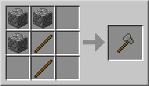
Топор можно использовать как оружие - сильнее его только меч. Удары топором будут засчитываться как два использования. Топор имеет меньшую скорость атаки чем у меча
Для крафта топора нужно больше материалов, чем для меча, поэтому все-таки для оружия лучше крафтить меч. Хотя в PvP боях у топора есть дополнительный эффект при атаке - "crushing blow" либо "сокрушительный удар", который пробивает щит противника. При этом другой игрок не может использовать щит в течении 6 секунд.
Топор может с одного удара убить кролика, курицу или магмовый куб средних размеров. С одного критического удара - слизня средних размеров.
Топор можно зачаровать для дополнительных эффектов. Боевые эффекты «Остроты», «Бич членистоногих» и «Небесная кара» усиливают его как оружие. Чары "Удача" на топоре бесполезны.
Лук и стрелы
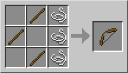
Лук (англ. Bow) — это оружие дальнего боя для игрока. Также используется скелетами.
Чтобы пользоваться луком, нужен сам лук и стрелы, которые могут просто находиться в инвентаре игрока. Стрелы можно скрафтить или получить при убийстве скелетов. Стрелы, выпущенные игроком или раздатчиком, можно подобрать после того, как они воткнутся в блок, но это не относится к стрелам, выпущенным скелетами, или из лука, зачарованного на Бесконечность. Для того, чтобы выстрелить из лука, нужно сначала натянуть тетиву, зажав правую кнопку мыши, а затем отпустить её. Чем сильнее натяжение, тем дальше летит стрела и тем больше урон: полностью натянутый лук наносит урон в 4,5, наполовину натянутый — 3 сердечка. При полном натяжении все враждебные мобы (кроме гигантов и огромных слизней) убиваются с двух-трёх выстрелов. После версии 1.0.0 лук имеет прочность.
Лук бесполезно использовать против Странников Края, так как они телепортируются от стрел. Использование лука крайне эффективно против гастов, скелетов, криперов, пауков, скелетов-иссушителей и скелетов-наездников, то есть тех мобов, которые используют дистанционные атаки или чрезвычайно опасны в непосредственной близости от игрока.
Во время полёта на стрелу действует сила тяжести, и поэтому при стрельбе на дальние дистанции нужно натягивать тетиву лука до максимума и, при необходимости, целиться чуть выше цели.
Если выпущенная из лука стрела пролетит через лаву (Но не огонь!), то стрела загорится. Горящая стрела воспламеняет мобов, но не поджигает блоки, не сжигает предметы и не наносит дополнительный урон, но активирует THT. Через время стрела потухнет, хотя горящие стрелы, выпущенные из лука с зачарованием на огонь, будут гореть вечно, пока не исчезнут.
- Максимальное расстояние полёта стрелы на плоскости — 50 блоков.
- Является редким дропом со скелета, дроп бывает даже зачарованным (Сила I-II).
- Любым зачарованием лука до 9 уровня включительно всегда будет являться Сила I.
- Если в Minecraft PE до версии 0.7 натянуть тетиву до конца, потом переключиться на какой-нибудь другой предмет в инвентаре, то если возвратиться к луку, в руках игрока будет текстура лука с вложенной стрелой и натянутой тетивой. Исправлено.
Скелеты с некоторой вероятностью дропают 0—2 стрелы после смерти. Однако, стрелы, пущенные скелетами, подобрать невозможно.
Деревенские жители продают 8—12 стрел за 1 изумруд.
Раздатчики, которые можно найти в храме в джунглях, содержат стрелы в количестве 4—14.
Дальность полёта стрелы зависит от степени натяжения лука. Скелеты используют лук и стрелы для атаки игрока. Стрелы могут двигаться под водой, но при этом сильно снижается дальность и скорость полёта, а за стрелой остаётся след в виде пузырьков. У стрел есть максимальный радиус полёта — около 120 блоков, он достигается при выстреле с максимальным натяжением лука под углом в 45 градусов относительно поверхности. Максимальная высота полёта — около 70 блоков, достигается при выстреле вертикально вверх. Стрелы наносят повреждения от 2 до 10 в зависимости от натяжения лука, если они поражают цель. Урон стрел, выпущенных скелетом, зависит от расстояние игрока от него и уровня сложности.
Стрелы втыкаются в объекты, с которыми они приходят в соприкосновение, и спустя минуту исчезают. Стрелы, выпущенные игроком или раздатчиком, можно подобрать после попадания в блоки. Стрелы, попавшие в игрока, достать нельзя. Выпущенные скелетом, игроком в творческом режиме или с помощью лука с зачаровыванием «Бесконечность» стрелы не могут быть собраны. Однако в творческом режиме их можно забрать, хотя в инвентарь они не добавляются.
Стрелы могут рикошетить от некоторых объектов (например, от игрока в режиме «Творчество»). При некотором наклоне стрельбы игрок может нанести урон самому себе, если побежит вперёд в направлении выпущенной им стрелы.
Стрелы, пролетевшие сквозь лаву, возгораются и демонстрируют соответствующую анимацию. Они не сгорают, не поджигают блоки, но активируют ТНТ и поджигают мобов, если в них попадут. Через некоторое время горящие стрелы перестают гореть и становятся обычными, но если стрелять из лука с зачарованием «Горящая стрела», то стрелы будут гореть, пока не исчезнут.
- Стрелы не разрушают стекло при попадании в него.
- Стрелы летят дальше, если они запущены в Нижнем мире.
- Воспламенённые стрелы могут активировать блоки ТНТ.
- Если разрушить блок, в который попала стрела, стоя под ним, то стрела упадёт и нанесёт игроку урон. Некоторые игроки используют это для создания ловушек «массового поражения»: если в блок воткнуть много стрел, а потом взорвать его, то стрелы полетят во все стороны, нанося урон всем оказавшимся поблизости.
- До версии Beta 1.6 при открытии двери, в которую выстрелил игрок, стрела оставалась висеть в воздухе. В Beta 1.6 этот баг был исправлен интересным образом: при попадании в дверь стрела смещается к верхней границе двери (как бы перекладывается на её верх), и при открытии просто падает с двери. В версии 1.4.6 вновь замечен.
- Если стрела попадёт в картину, то картина выпадет как предмет, а стрела исчезнет.
- Если воткнуть стрелу в повторитель, то при его включении, выключении или переключении задержки стрела «воткнется» в него еще раз и издаст громкий звук. Можно сделать генератор импульсов из двух повторителей, повтыкать стрел и запустить. Пока он работает, стрелы не будут исчезать, но зато будут очень громко трещать. Это хороший способ напугать других игроков в мультиплеере.
- Аналогично работает и направленный вверх липкий поршень с блоком на нём. Если выдвинуть его, настрелять в основание поршня и подключить к генератору, стрелы будут то втыкаться в блок, то выпадать из него на поршень. Таким образом, они будут постоянно обновляться и не исчезнут. Если теперь выдернуть и поршень, и блок в сторону (парой других липких поршней), то стрелы упадут вниз. Это позволяет сделать ловушку типа «дождь из стрел», способную длительно стоять заряженной.
- В одной из версий Survival Test скелеты стреляли фиолетовыми стрелами. Их текстуру до сих пор можно найти внутри игровых файлов.
- Выпущенные стрелы являются сущностями.
- Приблизительно с Beta 1.8 по 1.0.0 стрелы, попавшие в мобов и игроков, застревали в них. Это было убрано из-за проблем с масштабированием стрел (из-за особенностей игры стрелы, попавшие, например, в гигантов, должны были быть соразмерно огромными). В 1.4.4 эта возможность была возвращена, но только для игроков.
- Если переименовать стрелу, выстрелить ей и подобрать, то имя у стрелы пропадёт.
- При сильном натяжении стрела может разрушить вагонетку или лодку.
- Через взлом инвентаря можно добыть стрелу разбрызгивания.
Tipped arrows
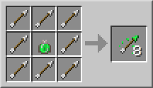
Tipped arrows[Computer and Pocket editions] are arrows that imbue a potion effect when hitting a mob or player. The duration of the effect is 1⁄8 that of the corresponding potion, if applicable, and is not affected by the power of the arrow. The status effect is the same as the regular power effect for the potion. If a bow is enchanted with Infinity, tipped arrows will still be consumed.
The types of arrows are:
Arrow of Regeneration
Arrow of Swiftness
Arrow of Fire Resistance
Arrow of Healing
Arrow of Night Vision
Arrow of Strength
Arrow of Leaping
Arrow of Invisibility
Arrow of Poison
Arrow of Weakness
Arrow of Slowness
Arrow of Harming
Arrow of Water Breathing
Arrow of Luck
Spectral arrows
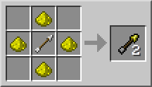
The spectral arrow[Computer edition only] imbues the Glowing status effect for 10 seconds. The Glowing effect creates an outline of the target, which is visible through blocks, and colored based on the target's team (white by default). If a bow is enchanted with Infinity, spectral arrows will still be consumed.
Огонь

Огниво (Flint and Steel) зажигает огонь. С его помощью можно устроить пожар или активировать портал в ад (Нижний мир). Рецепт: Железный слиток + Кремень
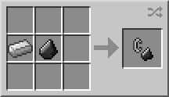
После разжигания огня на негорючем блоке огонь через некоторое время исчезает. Это ограничивает возможности в разжигании костра и в уничтожении блоков. Обычно огниво используют для быстрого удаления листвы или деревьев, для освещения тёмных мест и для создания камина из адского камня.
Огниво также наносит урон мобам, но медленно и менее эффективно, чем меч. Огниво может использоваться для активации взрывчатки (ТНТ).
Сейчас огонь в Minecraft имеет смысл только для быстрого освещения или для устройства пожаров. А когда-то, в первых версиях, он использовался вместо печки.
В Краю огонь горит вечно на обсидиане и на коренной породе. Адский камень из Нижнего мира также горит вечно, если его не погасить.
Огниво хватает на 65 использований. Если поджечь свинью, корову или курицу, то из неё выпадет не сырое мясо, а жареное. Находясь в раздатчике, огниво может поджигать блок перед ним.
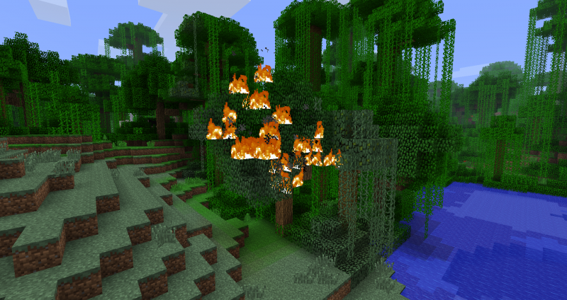
Лава
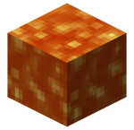
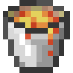
Ведро лавы можно поместить в печь в качестве топлива. 1 единицы лавы хватает на переплавку 100 единиц других материалов. Время горения – 1000 сек 17 минут).
Лава может использоваться для создания обсидиана, освещения, ловушек или в декоративных целях. Еще из неё можно сделать мусоросжигатель (все брошенные в лаву предметы сгорают). В лаве можно сгореть и самому, так что её лучше размещать в колодце из камня или любого негорючего блока.
Ведро лавы можно использовать как оружие. Если его применить на монстра, убийство практически происходит моментально. Но можно загореться самому, так что лучше иметь рядом воду или выпить зелье огнестойкости.
Из ведра лавы можно сделать источник, который через некоторое время создаст небольшое огненное озеро.
Взрывчатка

ТНТ (от англ. TNT, trinitrotoluene — тринитротолуол), динамит или тротил — блок, обладающий свойством детонировать и создавать мощный взрыв. ТНТ часто используется игроками как в шахтах, так и на поле боя в качестве мин. Детонация происходит через 4 секунды после активации блока. Также после активации на блок начинает действовать сила тяжести.
В пустынном храме генерируются 9 блоков ТНТ.
Активируется ТНТ огнём (в том числе от лавы), любым устройством красного камня, использованием огнива, попаданием горящей стрелы или любым другим взрывом рядом. До версии Beta 1.7 ТНТ можно было активировать ещё и ударом руки и устанавливать на него нажимную пластину. Повреждение, которое создает взрыв ТНТ, максимально в центре взрыва и уменьшается к краям. ТНТ может уничтожить любые блоки в игре, кроме обсидиана, коренной породы, жидкостей, сундуков Края,рамок портала в Энд,командных блоков и наковален. ТНТ сдетонирует, если рядом произойдёт взрыв, поэтому установка нескольких блоков ТНТ рядом и их активация создадут цепную реакцию, и поэтому взрыв получится более мощный чем взрыв одного блока. Кроме того, взрыв может отбрасывать сыпучие блоки, поэтому активированный динамит от взрывов разлетается в разные стороны, что также дает возможность создавать пушки, стреляющие динамитом на большие расстояния. Если взрыв (это относится не только к ТНТ, но и к криперам) происходит в воде, то он не наносит ущерба блокам, хотя игроки и мобы все равно получают урон от взрыва.
Добыча ресурсов взрывами ТНТ является более быстрой, но очень затратной — приблизительно 75 % блоков, которые оказались в радиусе поражения взрыва, уничтожаются. Остальные 25 % можно подобрать. Кроме того, крафт ТНТ является довольно дорогим, поэтому использовать его в целях добычи ресурсов неэффективно. Единственное его применение при добыче ресурсов — создание рукотворных пещер, на стенах которых можно найти руды и добыть их классическим способом.
С 1.3 урон ТНТ зависит от сложности, при этом на мирной сложности урона нет вовсе. Здоровый игрок без брони на нормальной сложности умрёт на расстоянии 4 блоков от ТНТ, на расстоянии 6 блоков у игрока останется 5 здоровья. При наличии стены из любого материала между игроком и взрывом урон будет уменьшен до .
- В блоке ТНТ имеется множество несоответствий с реальным миром. Он называется TNT (то есть тротил), однако представляет из себя 16 палок динамита, которые в реальности наполнены не тринитротолуолом (как многие ошибочно считают), а адсорбентом (таким как опилки, песок или земля), пропитанным нитроглицерином. Этот блок крафтится из смеси песка и пороха, хотя порох не имеет никакого отношения ни к тринитротолуолу, ни к динамиту.
- На многих серверах крафт, установка и активация (или, ещё чаще, что-то из трёх) динамита обычными игроками запрещена. Это связано c тем, что динамит - излюбленная игрушка гриферов.
- Если взорвать ТНТ в толще камня, то он уничтожит вокруг себя куб 3x3x3. Это можно использовать для быстрого создания подземных комнат в творческом режиме, однако следует быть осторожным. Если рядом с ним будет земля или воздух, воронка от взрыва получится неровной.
- В Classic блок ТНТ выполняет декоративную функцию и не может быть взорван.
- После активации динамит не только падает, но и становится нетвердым, поэтому через него можно пройти или упасть в яму, в которой он был установлен. Это связано с тем, что после активации динамит перестает быть блоком и становится сущностью (подобно игрокам, мобам или падающему песку/гравию).
- В режиме от третьего лица на блоке в руке ранее написано «ТИТ» вместо «TNT».
- Если, при вылете на большой скорости из пушки, блок ТНТ врезается в стену, то он проскальзывает вверх по ней на высоту 2-3 блока, а затем начинает падать. Это происходит при взлете блока, при падении наоборот (направление зависит от вектора ускорения).
- 9 блоков ТНТ можно добыть в храме в пустыне. Нужно разминировать нажимную пластину, раскопав под ней блоки. Чтобы не попасть в ловушку, нужно вскапывать не синюю, а оранжевую обожжённую глину в центре зала.
- В карманной версии ТНТ присутствует в файлах игры и может быть добыт читерскими программами. Начиная с версии 0.4.0 может быть скрафчен в режиме Выживания; также доступен в Творческом режиме, и с версии 0.8.0 build 2 его можно активировать огнивом. При размещении в мир имеет те же свойства, что и в компьютерной версии.
- В Survival Test ТНТ нельзя было получить легально. При старте игры игроку выдаётся 10 ТНТ. Активированный ТНТ можно обезвредить по ПКМ.
- Eсли THT активирован, то его уже нельзя деактивировать.
- В карманном издании 0.8.1 есть ошибка, где ТНТ уничтожает блоки, но не активирует другие ТНТ, стоящие рядом.
- Если зажать Shift и попытаться зажечь ТНТ зажигалкой, то блок загорится (на нем появится блок огня), вместо того чтобы активироваться.
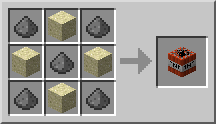
Удочка

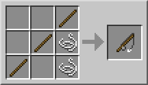
Удочка - ценный инструмент, который нужен для рыбалки или притягивания предметов. Рецепт: Нить + Палка
Удочку можно использовать для притягивания многих сущностей, в том числе лодки и мобов, позволяя использовать удочку также как оружие для борьбы с мобами. Просто закиньте крючок в моба и притяните его.. Урона он не получит, но его можно будет теперь достать мечом. Или сбросить в пропасть или лаву, если между вами есть такое препятствие.
Хрупкие сущности, вроде картин, могут поломаться. Притягивание лодок и вагонеток часто тоже ведёт к их поломке. Также можно нажимать нажимные пластины с расстояния, если прицельно закинуть крючок в пластину.
Поводок
Поводок или лассо (Lead) привязывает животных к заборам. С помощью поводка их также можно водить за собой. Рецепт: Нить + Слизь

При помощи поводка можно подвешивать мобов. При подвешивании лошади, она может порвать поводок. Если сесть на неё при этом, то поводок лопнет. Со свиньёй такого не происходит.
Если тянуть моба наверх, он может умереть. Если подвесить моба на поводок и взлететь вверх, моб взлетит за вами, а затем начнет падать. Если взлететь на большой скорости, моб взлетит на такой же скорости, но при этом упадет примерно с такой же скоростью.
На поводок нельзя повесить жителя.
Вода

Ведро воды (Water Bucket) позволяет создать источник воды, из которого получается озеро или ручей. Это хорошие средства для замедления мобов.
Также ведро воды − хороший способ защититься от странников Края, выливая воду им под ноги (странник края телепортируется на безопасное расстояние, т.к. они ее боятся).
Воду можно использовать для создания обсидиана, камня, булыжника, или для замедления и удержания дистанции с мобами. Ещё можно создавать фонтаны, лифты, бассейны или быстрые транспортёры вещей. Воду из ведра можно налить в котёл. Чаще всего ведро используют для переноса воды из одного источника к другому, например, из колодца на ферму. Также из воды можно сделать лёд. Для этого нужно поместить блок воды в холодный биом (холодная тайга, холодная равнина и т.п.) или на вершину горы, где через некоторое время источник воды замерзнет. Кстати: если идет снег, то «заморозка» воды пройдет быстрее.
Ещё ведро воды может спасти жизнь в шахтах или в местах с лавой: можно потушиться, погасить большой объем лавы, благодаря этому (при умелом использовании) получая обсидиан, оттолкнуть или скинуть мобов, забраться на расположенный высоко участок, течением вытащить дроп из труднодоступного места.
С помощью ведра воды можно безопасно спускаться с любой высоты. Достаточно вылить воду возле края пропасти, немного подождать, пока вода «разольется», забрать источник воды обратно в ведро и быстро прыгнуть в поток воды. персонаж будет достаточно быстро спускаться вниз. В нижнем мире совершить такое невозможно, ибо вылитая вода мгновенно испаряется. Если во время спуска в игрока выстрелит (или же попросту ударит) враждебный моб, игрок может «выпасть» из потока и разбиться насмерть. Можно не забирать источник воды, и использовать поток для подъёма. Однако подниматься по потоку наверх будет гораздо медленнее и сложнее, чем спускаться вниз.